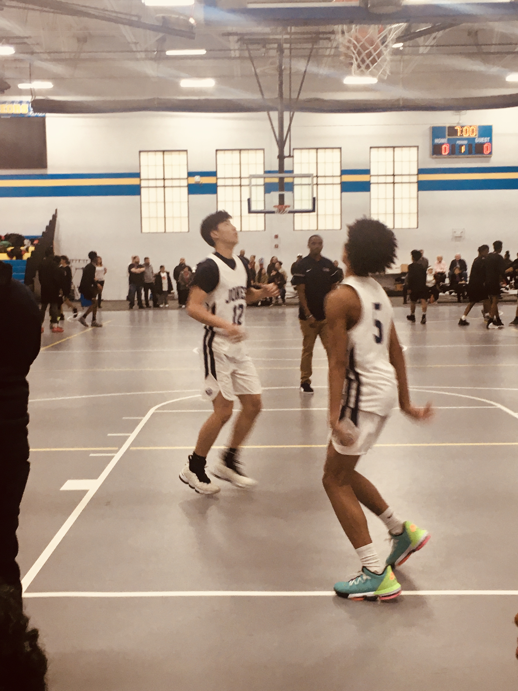
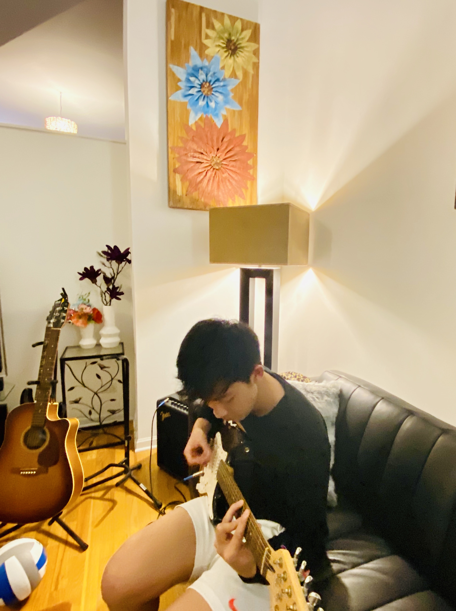
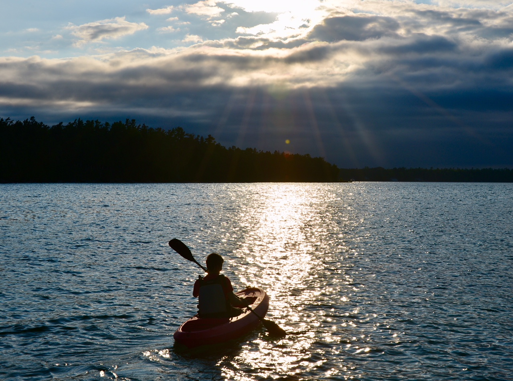

I started playing basketball when I was four at my local YMCA. From then on my passion in basketball sparked and everyday I watched NBA games, played basketball video games and followed my favorite players. From 6th to 8th grade and during my sophmore year of high school, I played my for school's basketball team. Beginning in 8th grade, I started to play basketball every Saturday morning with my dad. This helped me build a strong bond with him and brought us closer as not only father and son, but also as friends. Through my experience in playing basketball, my teamwork skills started to build up and I learned perseverence and determination.
When I was younger I used to play piano and the drums. I never thought I have have such passion and talent in guitar, until I saw my dad playing and singing. I was curious and wanted to try this new instrument. My parents signed me up for guitar lessons where I practiced the basics. However, as I moved up in level, I realized my talent in guitar. The lessons started to get boring because I would learn a song way faster than the rest of my peers and I would not have anything else to do for the rest of class. From then, my parents and I decided to stop registering me for lessons and instead I would self-teach myself different songs I enjoyed. My experience in learning and teaching myself different songs helped improve my patience and perseverence skills.
Photography has always been fasinating to me. My interest first sparked when I saw the photographs my grandpa took. From that point on, whenever my parents and I would go out to travel, I would take pictures using my dad's camera. Wanting to capture a beautiful scene was always my goal. However, I don't take a lot of photos. I only take photos that I find really astonishing. Photography triggers the creative side of me. My experience in phtography taught me that not everyone is going to like the photos you took where you found amazing. Photography helped me build my patience and taught me to be unique.
